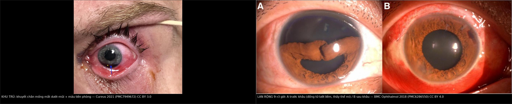
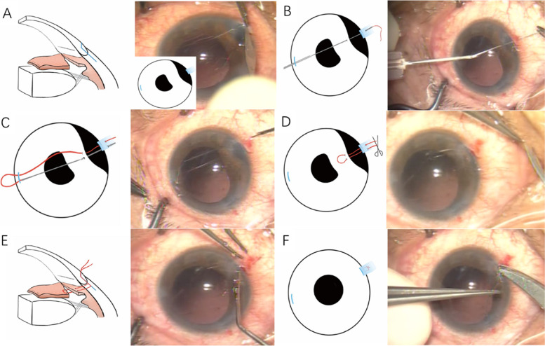
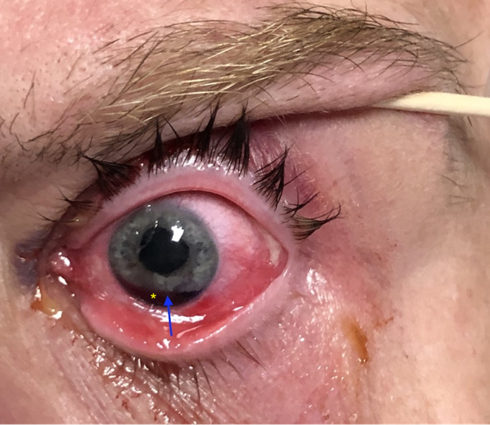
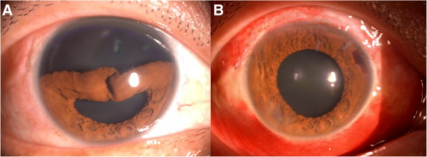
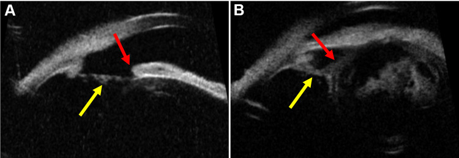

3262 — Rách chân mống mắt do chấn thương (iridodialysis): khi nào khâu, khâu kiểu nào / Traumatic iridodialysis
Tags: pattern:khuyet-chan-mong-mat pattern:dong-tu-hinh-D pattern:notch-dong-tu pattern:mat-mot-ben pattern:chan-thuong-dung-dap pattern:goc-mo-thong vung:mat vung:the-mi vung:goc-tien-phong vung:cung-mac protocol:den-khe protocol:soi-goc protocol:AS-OCT protocol:UBM-35-50MHz protocol:khau-chan-mong-mat protocol:phaco score:clock-hours
Mức chắc chắn (certainty): tổng hợp y văn (literature synthesis) — dựng từ 1 tổng quan kỹ thuật không nút (PMC13674913), 2 nghiên cứu hồi cứu có so sánh (67 mắt, PMC6286550; 51 mắt, PMC9011996), 1 nghiên cứu UBM 143 mắt chấn thương (PMC8357616), 1 tổng quan tái tạo mống mắt (PMC11084487) và 1 ca lâm sàng (PMC7949672). Không có RCT cho iridodialysis; mọi ngưỡng can thiệp đều là thực hành đồng thuận từ loạt ca, chỗ suy luận được ghi rõ.
Câu chốt: Rách chân mống mắt là mống mắt tách khỏi thể mi/củng mạc, nên khâu bờ đồng tử không sửa được — phải khâu chân mống mắt vào thành củng mạc. Ba con số quyết định: (1) gặp ở 9,3% chấn thương đụng dập và 0,2% người mổ đục thể thủy tinh (số liệu thứ cấp, dẫn trong PMC6286550); (2) ngưỡng khâu thực hành là > 2 giờ cung kèm triệu chứng (glare, nhìn đôi, chói) — 1 giờ cung = 30° (PMC13674913); (3) sau khâu, nhãn áp không ổn định ở 6,3–8,6% (có góc rẽ kèm theo) và bong võng mạc 7,4–8,3% — nên theo dõi nhãn áp và đáy mắt, không chỉ chụp "đồng tử đã tròn" (PMC6286550, PMC9011996).
1. Tổng quan bệnh học – cơ chế hình ảnh (TẠI SAO)
1.1 Giải phẫu: vì sao rách đúng ở chân mống mắt
- Chân mống mắt (iris root) là phần mỏng và yếu nhất của mô đệm mống mắt (PMC9114554) và là nơi mống mắt bám vào thể mi phía trước, ngay sau gai củng mạc (scleral spur). Bó dọc cơ thể mi chạy từ gai củng mạc ra sau, còn mống mắt "treo" vào thể mi ở đúng mặt phẳng này.
- Vì vậy khi có lực cắt, mặt phẳng tách tự nhiên là giữa chân mống mắt và thể mi — không phải ở bờ đồng tử. Đây là điểm khác biệt cốt lõi giữa iridodialysis (tách chân) và rách cơ vòng đồng tử (sphincter tear, rách ở bờ đồng tử).
1.2 Vật lý chấn thương: vì sao lực dọc trục lại xé ngang
- Cú đập kín làm nhãn cầu bị ép theo trục trước–sau trong vài mili giây: đường kính trước–sau giảm, xích đạo giãn ra, rồi nhãn cầu "bật" trở lại. Mô mềm nhất chịu ứng suất cắt lớn nhất — đó là chân mống mắt.
- Kết quả: một cung mống mắt bị bong khỏi thể mi, phần còn dính bị kéo về phía đồng tử → bờ tự do của mống mắt tạo một dây cung thẳng, đồng tử mất một cung → hình chữ D / lưỡi liềm, có notch đúng vị trí khuyết. Vùng bong lộ thể mi (sẫm màu hơn) và củng mạc (trắng) — chính là "nền trắng" nhìn thấy trong ảnh lâm sàng.
- Vì là vết rách hở vào góc tiền phòng, tiền phòng thông trực tiếp với khoang trên hắc mạc/bề mặt thể mi — cơ sở để hiểu vì sao có thể kèm máu tiền phòng, đứt zonule, và về lâu dài dính góc (PAS).
1.3 Vì sao triệu chứng lại là "chói và nhìn đôi một mắt"
- Khuyết chân mống mắt tạo khẩu độ quang thứ hai ở ngoại vi: ánh sáng đi qua vùng không có mống mắt chắn, tạo ảnh phụ lệch trục → nhìn đôi một mắt (monocular diplopia), chói (glare), sợ ánh sáng.
- Khuyết ở phía trên thường không triệu chứng vì mi trên che; khuyết phía dưới và khuyết rộng là chỉ định mổ chính (PMC13674913, PMC11084487). Đây là lý do không phải mọi iridodialysis đều cần mổ.
- Khuyết rộng còn làm mất phần che của mống mắt trước IOL → lóa khi nhìn đèn, và về thẩm mỹ đồng tử méo, không đối xứng.
1.4 Vì sao nhãn áp có thể thấp – bình thường – cao sau cùng một chấn thương
- Thấp: nếu kèm khe thể mi (cyclodialysis cleft) — thông tiền phòng với khoang trên hắc mạc → tăng thoát dịch, bong hắc mạc, tiền phòng nông. Hướng điều trị ngược hoàn toàn với iridodialysis (đóng khe, không phải khâu mống mắt).
- Bình thường: đa số trường hợp cấp; thể mi có thể giảm tiết sau chấn thương nên che lấp tăng trở lực thoát.
- Cao: khi có góc rẽ (angle recession) hoặc dính góc — trong 2 loạt khâu mống mắt, 6,3% và 8,6% mắt (PMC6286550) cùng 7,4% và 12,5% mắt (PMC9011996) vẫn không ổn định nhãn áp vì góc rẽ. Ở trẻ chấn thương kín, 8,1% chuyển thành glôcôm, và toàn bộ ca glôcôm đều thuộc nhóm chấn thương kín (15,2%) (PMC11755633).
1.5 Vì sao siêu âm tần số cao (UBM) lại quan trọng
- Chân mống mắt, thể mi và zonule nằm sau mống mắt, không nhìn trực tiếp được khi giác mạc đục, máu tiền phòng, đục thể thủy tinh. UBM đầu dò 50 MHz (chế độ high-resolution và angle) nhìn được mặt phẳng góc và chân mống mắt (PMC8357616).
- Trên 143 mắt chấn thương có môi trường mờ, UBM phát hiện tổn thương zonule 55,2% (rách 33,6%, giãn 21,7%), và vị trí 3–6 giờ cung là thường gặp nhất (rách 70,83%, giãn 96,77%) — nghĩa là iridodialysis thường đi kèm đứt zonule, một thông tin đổi hẳn kế hoạch mổ (PMC8357616).
2. Mẫu hình + chẩn đoán phân biệt theo vị trí (gamut)
- Mẫu hình chính: một bên, sau chấn thương (hoặc sau mổ nội nhãn), đồng tử méo hình chữ D/lưỡi liềm + notch, thấy thể mi/củng mạc ở ngoại vi, thường kèm máu tiền phòng, đục thể thủy tinh, lệch thể thủy tinh, dịch kính tiền phòng.
- Theo vị trí tổn thương (gamut):
- Chân mống mắt → iridodialysis do chấn thương, do mổ (phaco/vết mổ giác mạc), bẩm sinh (coloboma điển hình vùng dưới–mũi).
- Bờ đồng tử → rách cơ vòng đồng tử (sphincter tear), rách toàn bộ mống mắt ("expulsive" hiếm).
- Thể mi – củng mạc → khe thể mi (cyclodialysis cleft) với hạ nhãn áp.
- Toàn bộ mống mắt → aniridia bẩm sinh (hai bên) hoặc mất mống mắt do chấn thương nặng.
- Theo thời điểm:
- Cấp (0–7 ngày): máu tiền phòng, viêm tiền phòng, tăng nhãn áp do máu bít bè, đục thể thủy tinh, lệch thể thủy tinh, dịch kính tiền phòng.
- Muộn (tuần–năm): chói/nhìn đôi kéo dài, dính góc và glôcôm, phù hoàng điểm/võng mạc do viêm, co kéo dịch kính nếu có rách bao.
3. Bảng so sánh phân biệt (ma trận đối chiếu)
| Thực thể (entity) | Hình ảnh điển hình (đèn khe / soi góc / AS-OCT / UBM) | Chốt vào (rule-in) | Chốt loại (rule-out) | Gợi ý xác nhận |
|---|---|---|---|---|
| Iridodialysis chấn thương | Notch + đồng tử hình D/lưỡi liềm, bờ mống mắt là dây cung thẳng, lộ thể mi sẫm/củng mạc trắng ở ngoại vi; máu tiền phòng; soi góc: chân mống mắt tách, góc mở thông ra thể mi | Notch đúng vị trí + bờ tự do hình dây cung + tiền sử chấn thương | Mống mắt liên tục tới góc, không có notch | Đèn khe 2 mắt, soi góc 4 góc phần tư, ảnh chụp thẳng trục |
| Đứt chân mống mắt do mổ (iatrogenic) | Cùng hình thái notch nhưng ngay vết mổ/rìa sau phaco, ECCE, đặt IOL; 0,2% người mổ đục thể thủy tinh (dẫn trong PMC6286550) | Tiền sử mổ nội nhãn + notch sát vết mổ | Không tiền sử mổ, notch ở vùng đối diện vết mổ | Đọc hồ sơ mổ, soi góc vùng vết mổ |
| Rách cơ vòng đồng tử (sphincter tear) | Bờ đồng tử lởm chởm/răng cưa, đồng tử giãn không đều, không có notch ở chân mống mắt, không thấy thể mi ở ngoại vi | Rách tại bờ đồng tử + chân mống mắt còn dính | Chân mống mắt tách, góc thông | Soi góc: góc bình thường; đèn khe phóng đại bờ đồng tử |
| Khe thể mi (cyclodialysis cleft) | Nhãn áp thấp (thường ≤ 5–6 mmHg), tiền phòng nông, bong hắc mạc, nếp võng mạc; UBM/AS-OCT: khe thông tiền phòng – khoang trên hắc mạc | Nhãn áp THẤP + bong hắc mạc + thấy khe trên UBM | Nhãn áp bình thường/cao, không bong hắc mạc | UBM 50 MHz, AS-OCT; đo nhãn áp hai mắt |
| Góc rẽ (angle recession) kèm theo | Chân mống mắt lùi ra sau, dải thể mi lộ rộng, góc sâu hơn mắt bên; mống mắt vẫn liên tục | Góc sâu bất thường + dải thể mi lộ ở vùng chấn thương | Notch + bờ tự do (đó là iridodialysis) | Soi góc hai mắt; AS-OCT đo khoảng chân mống mắt–gai củng mạc |
| Coloboma mống mắt bẩm sinh | Khuyết vùng dưới–mũi, bờ nhẵn, đều, hai bên (thường), không máu tiền phòng, không tiền sử chấn thương | Khuyết dưới–mũi + hai bên + bờ nhẵn | Một bên + bờ dây cung + tiền sử chấn thương | Soi góc, ảnh gia đình, khám mắt bên kia |
| Aniridia | Gần như không còn mống mắt, hai bên, kèm giảm sản hoàng điểm, đục thể thủy tinh, glôcôm | Hai bên + kèm bất thường hoàng điểm | Một bên, còn phần lớn mống mắt | Đèn khe, OCT hoàng điểm, khám gia đình |
| Đứt zonule/lệch thể thủy tinh kèm theo | Thể thủy tinh rung (phacodonesis), lệch trục, khe sâu không đều; UBM: zonule giãn/đứt 3–6 giờ cung | Rung thể thủy tinh + lệch trục + UBM thấy zonule tổn thương | Thể thủy tinh vững, không lệch | UBM 50 MHz; đánh giá khi đã giãn đồng tử |

Ảnh ghép: bên trái — khuyết khu trú vùng dưới–mũi kèm máu tiền phòng (Cureus 2021, PMC7949672, CC BY 3.0); bên phải — khuyết lan rộng 9→3 giờ, đồng tử lưỡi liềm, lộ thể mi trắng (A trước khâu, B sau khâu; BMC Ophthalmology 2018, PMC6286550, CC BY 4.0). Tạo bằng tools/make_composite.py (letterbox, không crop).
4. Protocol chụp/khám + hệ phân độ và kỹ thuật khâu
4.1 Trình tự khám – quyết định
flowchart TD
A[Chan thuong dung dap: dong tu meo, mau tien phong] --> B[Thi luc + do nhan ap HAI MAT + den khe]
B --> C{Thay notch chan mong mat?}
C -->|Khong| D[Tim rach co vong, khe the mi, lech the thuy tinh]
C -->|Co| E[Dem so gio cung + chup anh thang truc + soi goc khi mau tan]
E --> F{Trieu chung chieu sang, nhin doi, tham my?}
F -->|Khong| G[Theo doi nhan ap, goc, thi luc moi 3-6 thang]
F -->|Co| H{Khuyet hon 2 gio cung?}
H -->|Khong| G
H -->|Co| I[Khau chan mong mat vao cung mac 1,5-2 mm sau ria]
I --> J{Co duc the thuy tinh hoac lech?}
J -->|Co| K[Phaco + IOL cung thi, can nhac CTR neu zonule yeu]
J -->|Khong| L[Chi khau mong mat]
I --> M{Khuyet hon 3 gio cung va thieu bao?}
M -->|Co| N[Can nhac artificial iris hoac IOL co dinh cung mac]
- Bắt buộc đo nhãn áp hai mắt trước mọi can thiệp: nhãn áp thấp đổi chẩn đoán sang khe thể mi (điều trị ngược), nhãn áp cao gợi ý máu bít bè hoặc góc rẽ.
- Soi góc (gonioscopy) sau khi máu tiền phòng tan, đủ 4 góc phần tư, cả hai mắt: xác nhận chân mống mắt tách, loại trừ khe thể mi, đánh giá góc rẽ và dính góc.
- AS-OCT tiền phòng (không tiếp xúc) khi giác mạc còn trong: đo góc, ghi hình notch, so sánh hai mắt. UBM 50 MHz khi môi trường mờ hoặc cần xem zonule/thể mi phía sau mống mắt (PMC8357616).
- Siêu âm B / UBM khi không soi được đáy mắt (đục thể thủy tinh, máu dịch kính) — cùng nguyên tắc "không mổ mù" của bài 1498.
- Đếm và ghi bằng giờ cung (1 giờ = 30°) + chụp ảnh thẳng trục để so sánh trước–sau; đây là "thước đo" duy nhất để quyết định và theo dõi.
4.2 Ngưỡng định lượng phải nhớ
| Thông số | Ngưỡng / giá trị | Ý nghĩa | Nguồn |
|---|---|---|---|
| Iridodialysis trong chấn thương đụng dập | 9,3% (số liệu thứ cấp) | Không hiếm; phải chủ động tìm notch | PMC6286550 |
| Sau mổ đục thể thủy tinh | 0,2% | Nghĩ tới khi đồng tử méo sau phaco | PMC6286550 |
| Ngưỡng khâu (thực hành) | > 2 giờ cung + triệu chứng/chức năng/thẩm mỹ | Dưới ngưỡng: theo dõi | PMC13674913 |
| Tiêu chuẩn vào loạt nghiên cứu khâu | > 90° (PMC6286550) / > 2 giờ cung (PMC9011996) | Các loạt chỉ mổ khuyết lớn | PMC6286550, PMC9011996 |
| Kỹ thuật "hangback" | Tốt nhất cho khuyết < 3 giờ cung | Chọn kỹ thuật theo độ rộng | PMC11084487 |
| Artificial iris / thiết bị mống mắt nhân tạo | Khuyết > 3 giờ cung | Khi khâu không đủ che/phục hồi | PMC11084487 |
| Số chỉ | ≈ 2 mối/góc phần tư, ~1 mối/giờ cung | Đủ đưa chân mống mắt về gai củng mạc | PMC6286550 |
| Vị trí ra kim | 1,5–2 mm sau rìa (limbus) | Vào đúng mặt phẳng chân mống mắt | PMC13674913 |
| Tổn thương zonule trên UBM | 55,2% (rách 33,6%, giãn 21,7%); 3–6 giờ cung thường nhất | Phải chuẩn bị CTR/đổi kế hoạch | PMC8357616 |
| Nhãn áp không ổn định sau khâu (do góc rẽ) | 6,3% / 8,6% (2 kỹ thuật) | Theo dõi nhãn áp dài hạn | PMC6286550 |
| Bong võng mạc sau khâu | 7,4% / 8,3% | Khám đáy mắt sau mổ | PMC9011996 |
| Mất tế bào nội mô | 14,4% / 11,3% (1 tháng) → 5,3% / 6,5% (6 tháng) | Hồi phục một phần; ECC trước mổ 2.479 / 2.387/mm² | PMC6286550 |
| Đứt chỉ 10-0 polypropylene | 0,5–57% (tổng quan) | Lý do chuyển sang 6-0/7-0 | PMC13674913 |
| Glôcôm sau chấn thương ở trẻ | 8,1%; chấn thương kín 15,2% | Theo dõi nhãn áp suốt thời thơ ấu | PMC11755633 |
4.3 Kỹ thuật: khâu vào CỦNG MẠC, không khâu bờ đồng tử
- Nguyên lý chung: đưa kim xuyên chân mống mắt rồi ra củng mạc 1,5–2 mm sau rìa (hoặc ngược lại), tạo mối cố định mống mắt–củng mạc; nhiều mối dọc theo cung khuyết. Viscoelastic giữ tiền phòng và "ủi" mống mắt cho dễ xuyên kim (PMC13674913).
- Hai hướng tiếp cận:
- Ab-interno: kim vào tiền phòng qua paracentesis đối diện điểm giữa khuyết, xuyên mống mắt từ trước ra sau rồi ra củng mạc → kiểm soát trong nhãn cầu tốt.
- Ab-externo: kim vào củng mạc 1,5–2 mm sau rìa, xuyên mống mắt từ sau ra trước → ít thao tác trong tiền phòng, thuận lợi khi tiền phòng nông.
- Chỉ khâu: kỹ thuật hiện đại dùng 6-0 hoặc 7-0 polypropylene, đầu kim 26–30 G, "flange" bằng đốt lạnh thay nút chỉ (MIKIR). Chỉ 10-0 truyền thống có tỷ lệ đứt 0,5–57%, nên các tác giả chuyển sang chỉ lớn hơn (PMC13674913).
- Kỹ thuật kinh điển vẫn dùng: McCannel (hai kim xuyên qua chân mống mắt, cố định 1 mm sau rìa), hangback (< 3 giờ cung, chỉ 10-0, nút trong tiền phòng), sewing machine, cobbler, reversed scleral tunnel (51 mắt: giảm mạnh xuất huyết dưới kết mạc lan rộng — 1 vs 24 mắt, p = 0,00; PMC9011996).
- Kết hợp với phaco/IOL: trong loạt 67 mắt, 37 mắt (55,2%) được khâu mống mắt cùng lúc lấy thể thủy tinh vì đục thể thủy tinh/lệch thể thủy tinh (PMC6286550). Khi zonule yếu (UBM), cân nhắc CTR; khi mất bao nhiều, cân nhắc IOL cố định củng mạc và/hoặc artificial iris.
- Sau mổ: corticoid + kháng sinh + giãn đồng tử tại chỗ (viêm tiền phòng sau mổ là chờ đợi được), đo nhãn áp, soi góc và khám đáy mắt trong các lần tái khám (PMC13674913).

Kỹ thuật "reversed scleral tunnel" (A–F): sơ đồ + ảnh mổ — đường hầm củng mạc đảo, kim xuyên chân mống mắt, kéo chỉ ra ngoài và buộc trong đường hầm (BMC Ophthalmology 2022, PMC9011996, CC BY 4.0).
5. Biến thể bình thường và cạm bẫy
- Khuyết nhỏ, không triệu chứng — đặc biệt khuyết phía trên bị mi che — là biến thể "lành tính", chỉ theo dõi. Không được mổ vì "thấy khuyết trên ảnh".
- Máu tiền phòng che lấp notch: lúc cấp, bờ mống mắt có thể bị máu và fibrin che; soi góc khi máu đã tan rồi mới kết luận. Ngược lại, máu tiền phòng không loại trừ iridodialysis.
- Đồng tử giãn do thuốc giãn làm mất dấu notch → khám lại sau khi hết giãn; ghi ảnh trước khi tra thuốc.
- Cạm bẫy chết người về mặt kỹ thuật: khâu bờ đồng tử (pupilloplasty) không sửa được iridodialysis — chỉ làm đồng tử nhỏ hơn, còn chân mống mắt vẫn tách và vẫn hở góc. Phải khâu chân mống mắt vào củng mạc (xem bài 3256 để phân biệt mục tiêu của pupilloplasty).
- Khâu quá căng: thiếu máu mống mắt, co kéo đồng tử (corectopia), dịch chuyển lỗ đồng tử, đau; quá lỏng: còn notch, chói dai dẳng.
- Bỏ sót khe thể mi: nhãn áp thấp + tiền phòng nông sau "khâu mống mắt" là dấu hiệu khe thể mi chưa đóng — điều trị là cyclopexy/atropine, không phải khâu thêm mống mắt.
- Bỏ sót đứt zonule/lệch thể thủy tinh: UBM cho thấy 55,2% mắt chấn thương có tổn thương zonule; mổ phaco "đơn thuần" trên mắt này dễ rơi nhân, mất bao (PMC8357616).
- Bỏ sót góc rẽ: nhãn áp có thể bình thường lúc ra viện và tăng nhiều năm sau; hẹn theo dõi nhãn áp dài hạn, không chỉ 1 tháng.
- Lộ chỉ/flange và mòn kết mạc: lý thuyết có nguy cơ với kỹ thuật không nút; các loạt ngắn chưa ghi nhận trong 1 năm, nhưng cần theo dõi dài hơn (PMC13674913).
- Trẻ em: ưu tiên gây mê toàn thân; luôn hỏi cơ chế chấn thương và khám mắt bên kia, vì chấn thương kín ở trẻ có nguy cơ glôcôm 15,2% (PMC11755633).
6. Tự lượng giá — Blind Quiz
Ca 1 — Nam thanh niên, đỏ–đau mắt sau tai nạn

- Gợi ý lâm sàng: chấn thương do dây bungee bật vào mắt; thị lực giảm, đau, nhìn mờ; nhãn áp đo được 18 mmHg.
- Câu hỏi: (a) Mô tả 2 dấu hiệu chính trong ảnh. (b) Ba chẩn đoán cần loại trừ? (c) Việc phải làm ngay trong buổi khám?
Bấm để hiện đáp án (findings + chẩn đoán)
- Dấu hiệu: khuyết chân mống mắt vùng dưới–mũi (mũi tên xanh) với bờ mống mắt hình dây cung, đồng tử giãn méo, và máu tiền phòng (dấu hoa thị) — tam chứng của iridodialysis cấp.
- Chẩn đoán: iridodialysis do chấn thương đụng dập kèm máu tiền phòng.
- Loại trừ: rách cơ vòng đồng tử, khe thể mi (nếu nhãn áp thấp), đứt zonule/lệch thể thủy tinh, dị vật xuyên thấu.
- Phải làm: đo nhãn áp hai mắt, khám đèn khe tìm tổn thương xuyên thấu, soi góc khi máu tan, UBM/B-scan đánh giá zonule và thể thủy tinh; điều trị máu tiền phòng (đầu cao, corticoid, theo dõi nhãn áp).
- Nguồn ảnh: Cureus 2021 — PMC7949672 — Figure 1 — CC BY 3.0.
Ca 2 — Đồng tử hình lưỡi liềm sau chấn thương bóng

- Gợi ý lâm sàng: nam 34 tuổi, chấn thương đụng dập mắt phải; đồng tử méo, chói nặng; đục thể thủy tinh độ 2.
- Câu hỏi: (a) Khuyết rộng bao nhiêu giờ cung? (b) Có chỉ định khâu không, vì sao? (c) Vì sao phải khâu vào củng mạc?
Bấm để hiện đáp án (findings + chẩn đoán)
- Dấu hiệu: mống mắt bong từ 9 giờ đến 3 giờ (khoảng 6 giờ cung ≈ 180°), bờ tự do tạo hình lưỡi liềm, vùng bong lộ thể mi sẫm màu và củng mạc trắng; sau khâu (B) đồng tử tròn lại, mống mắt áp sát góc.
- Chỉ định: có — khuyết > 2 giờ cung kèm chói/nhìn đôi và đục thể thủy tinh; loạt này khâu kèm phaco + IOL.
- Vì sao khâu củng mạc: tổn thương là tách chân mống mắt khỏi thể mi/củng mạc; chỉ mối khâu xuyên chân mống mắt ra củng mạc 1,5–2 mm sau rìa mới đưa mống mắt về đúng chỗ. Khâu bờ đồng tử chỉ thu nhỏ khẩu độ, không đóng được góc.
- Nguồn ảnh: BMC Ophthalmology 2018 — PMC6286550 — Figure 3 — CC BY 4.0.
Ca 3 — Mắt đục, không soi được góc

- Gợi ý lâm sàng: nam 63 tuổi, chấn thương đụng dập, giác mạc đục nhẹ + đục thể thủy tinh, không đánh giá được zonule bằng đèn khe.
- Câu hỏi: (a) Đây là phương thức gì, tần số bao nhiêu? (b) Hai dấu hiệu được đánh dấu? (c) Thông tin này thay đổi kế hoạch mổ thế nào?
Bấm để hiện đáp án (findings + chẩn đoán)
- Phương thức: UBM (siêu âm sinh hiển vi) đầu dò 50 MHz, chế độ high-resolution/angle — nhìn được mặt phẳng góc và zonule sau mống mắt.
- Dấu hiệu: (A) mũi tên đỏ = iridodialysis (chân mống mắt tách, lộ thể mi) và mũi tên vàng = zonule giãn/mỏng; hình B là zonule giãn ở mắt giả thủy tinh thể.
- Thay đổi kế hoạch: đứt/giãn zonule bắt buộc nghĩ tới CTR, thay đổi cách xử lý bao và nguy cơ rơi nhân; tổn thương zonule gặp ở 55,2% mắt chấn thương, hay ở 3–6 giờ cung.
- Nguồn ảnh: Clinical Ophthalmology 2021 — PMC8357616 — Figure 2 — CC BY-NC 3.0.
7. Câu hỏi nghiên cứu & điểm chưa đồng thuận (tính đến 11/2026)
- [Tranh cãi] Khuyết 2–3 giờ cung KHÔNG triệu chứng có nên khâu dự phòng để tránh dính góc và glôcôm muộn?
- Đã biết: tổng quan kỹ thuật nêu ngưỡng mổ > 2 giờ cung khi có rối loạn chức năng/thẩm mỹ; loạt 67 mắt chỉ mổ khi khuyết > 90° kèm triệu chứng, và vẫn có 6,3–8,6% nhãn áp không ổn định vì góc rẽ (PMC13674913; PMC6286550).
- Chưa rõ: tỷ lệ dính góc/glôcôm muộn theo số giờ cung ở nhóm không mổ chưa được đo tiến cứu; không có so sánh khâu sớm vs theo dõi.
- Hướng nghiên cứu: đoàn hệ tiến cứu ghi giờ cung + soi góc + nhãn áp định kỳ ≥ 5 năm, phân tầng 2–3 giờ cung.
- Nguồn: PMC13674913; PMC6286550.
- [Khoảng trống] Độ bền dài hạn của kỹ thuật khâu không nút ("flanged") chưa có dữ liệu > 1 năm và cỡ mẫu rất nhỏ.
- Đã biết: 5 nghiên cứu được tổng quan, mỗi nghiên cứu 1–4 mắt, theo dõi 3 tháng–1 năm; tác giả ghi nhận flange nằm trên bề mặt củng mạc về lý thuyết có nguy cơ mòn kết mạc nhưng chưa gặp trong thời gian theo dõi (PMC13674913).
- Chưa rõ: tỷ lệ lộ chỉ/mòn kết mạc, chùng chỉ, tái tách sau 2–5 năm; ảnh hưởng của căng chỉ lên tưới máu mống mắt.
- Hướng nghiên cứu: registry đa trung tâm, chụp AS-OCT góc định kỳ, báo cáo biến chứng theo thời gian.
- Nguồn: PMC13674913.
- [Khác biệt thực hành] Khi khuyết > 3 giờ cung kèm mất bao/đục thể thủy tinh: khâu mống mắt + IOL thường, hay artificial iris + IOL cố định củng mạc?
- Đã biết: thiết bị mống mắt nhân tạo được đề xuất cho khuyết > 3 giờ cung, giảm chói 75–100% nhưng cần mở lớn/đặt phức tạp (PMC11084487); có ca kết hợp artificial iris + IOL cố định củng mạc như một khối duy nhất (PMC11900309).
- Chưa rõ: tiêu chí chọn giữa hai hướng (theo giờ cung, tình trạng bao, zonule, tuổi) chưa được so sánh trực tiếp; chưa có dữ liệu chức năng thị giác dài hạn.
- Hướng nghiên cứu: so sánh tiến cứu hai chiến lược với kết cục glare score, thị lực tương phản, biến chứng nội mô.
- Nguồn: PMC11084487; PMC11900309.
Bài liên quan chéo
- 3256 – Đồng tử giãn cố định sau UZS: pupilloplasty có đáng làm?
- 1962 – Rách thể mi, góc rẽ và glôcôm góc rẽ
- 1434 – Hạ nhãn áp & khe thể mi (cyclodialysis cleft)
- 1444 – Viêm màng bồ đào sau chấn thương
- 449 – Chấn thương mắt do dị vật
- 416 – Dị tật tiền phòng ở trẻ
- 1456 – Bỏng hóa chất mắt
- 1442 – Mảnh thể thủy tinh còn sót trong tiền phòng
Ảnh
- Tên file:
3262_iridodialysis_SlitLamp_PMC6286550-Fig3.jpg,3262_iridodialysis_SlitLamp_PMC7949672-Fig1.jpg,3262_iridodialysis_UBM_PMC8357616-Fig2.jpg,3262_iridodialysis_Technique_PMC9011996-Fig1.jpg,composite_iridodialysis_khu-tru_vs_lan-rong.jpg. Nguồn + giấy phép từng ảnh:images/CREDITS.md. - Ảnh đơn giữ nguyên bản (không crop); ảnh ghép tạo bằng
tools/make_composite.py(letterbox nền đen, giữ tỷ lệ).
Không dùng để chẩn đoán độc lập khi chưa có người hướng dẫn.